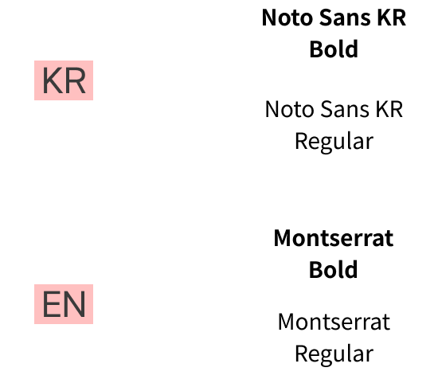

목표

- 기존의 글 위주 사이트와는 다르게, 그림을 중심으로 사용함으로써 시각적인 효과를 강조하였고,
- 복합 상업시설 사이트인 만큼 사용자들이 어떤 디바이스를 사용하더라도 쉽게 접근하고
- 자동으로 대응할 수 있도록 일관되고 적합한 레이아웃을 사용하여 수정하였다.
DESIGN
Concept
쇼핑몰과 생활편의시설이 모인 복합 상업시설을
디자인함에 있어서, 아이파크몰의 대표색인
RED와 깔끔한 BLACK 색상을 선택하여
트렌디하면서 세련된
느낌을 담아냈다.
Keyword
- #깔끔한
- #트렌디한
- #세련된
Color
Fonts
PUBLISHING
Site Information
- Mobile First 모바일 우선 / Media Queries 사용
media="(width>=768px)" - TABLET
media="(width>=1200px)" - PC - flex를 이용한 웹 페이지 레이아웃 제작 / 제어
- JavaScript를 이용한 swiper-slide
- @keyframes를 이용한 움직이는 이미지
Problem
01
각 기기에 맞는 레이아웃 재조정
반응형 웹에서는 화면 크기에 따라 레이아웃을 동적으로
조정해야하는 것이 어려웠다.
각 기기에 맞는 적절한 레이아웃을 만들기 위해서
다양한 브라우저와 디바이스에서 테스트를 해보며 제작했다.
02
반응형 웹에 JavaScript 적용하기
swiper-slide 사용으로 인해 레이아웃 조정과
pagination, next-prev button 스타일/위치 변경에 어려움을 겪었다.
구글링과 유튜브 검색을 통해 지식을 습득하고, 수많은 시도 끝에 구현할 수 있었다.
REVIEW